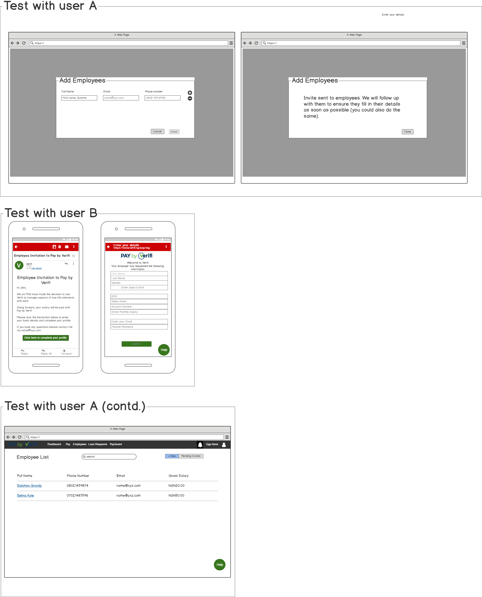

Pay by Verifi is a payroll application that allows HR/Accountants manage their payrolls and automate their salary payments.
Accountants waste time completing payroll runs each month because there are too many bottlenecks caused by government regulations. For example, 80% of small business accountants send exported Excel sheets from their payroll SaaS/Excel along with an attached authorisation letter to their banks as part of the process to complete payroll runs. Also, HRs of small-medium businesses hate the on-boarding process for their staff whenever they switch payroll SaaS.
The product goal was to solve these user problems while guaranteeing that payrolls are not disrupted by the new solution.
My team and I decided to unpack all the problems first by listing them all out, interviewing two groups of 5 accountants+HRs, and taking this feedback to help with our solution design. For the HRs, we found that most payroll applications required them to export an Excel file, fill in the data according to a certain prescribed structure and then re-upload this file. Most HRs either did not have all the data fields esily accessible, had the data as a physical copy or found the process of copying and pasting data lines tedious. They had resorted to handing this task to junior employees who solved this problem by re-interviewing most of the employees to complete their profiles.
After some brainstorming, my team and I decided to orgainse user interviews on possible solutions using wireframes.
The reason behind this test came from observing the way these junior employees solved their tasks, and noticing that all employees had a mobile phone that they were using. The results of this test were positive, with 87% of interviewees completing the process successfully. So we decided to run an A/B test against the current onboarding solution. This A/B test was as follows;
The outcome of the B test strongly correlated with the results of the user interviews- 81% of users completed the onboarding process versus 65% for the A test. However, we noticed issues with the response times from the employees which we resolved in further iterations.
For the accountants, the numerous fraud checks and regulatory agencies had added many inefficiencies to the process of company to employee salary payments (a monthly task). For example, after sending the payroll file and authorisation letter to the bank, accountants had to still call the account officers at the bank to speed up.
Although we were limited by the Central Bank's rules on bank transactions in how much of the process we could change, by shadowing the stakeholders involved in the process we were able to observe loop holes that we could capitalise on to improve the user experience. One such loophole was the ease with which company bank cards could be acquired (compared to linking a company account to a SaaS). There were still isses with this process:
To reduce the length of the process, we built an MVP that;